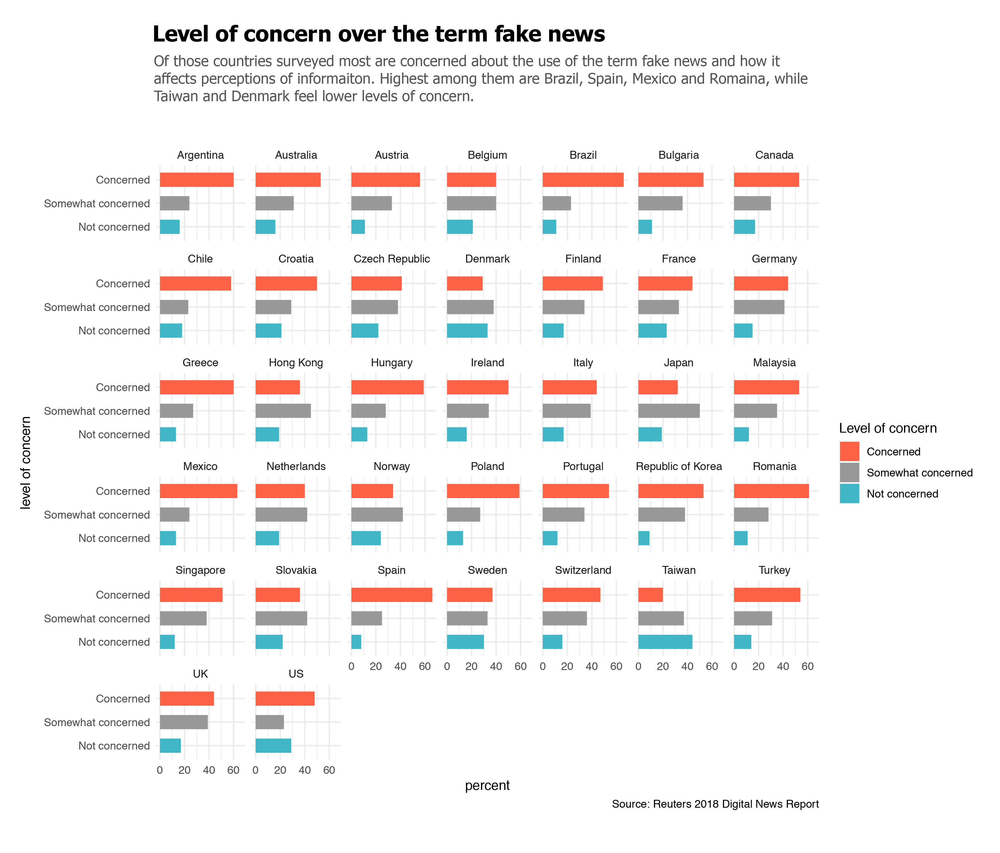
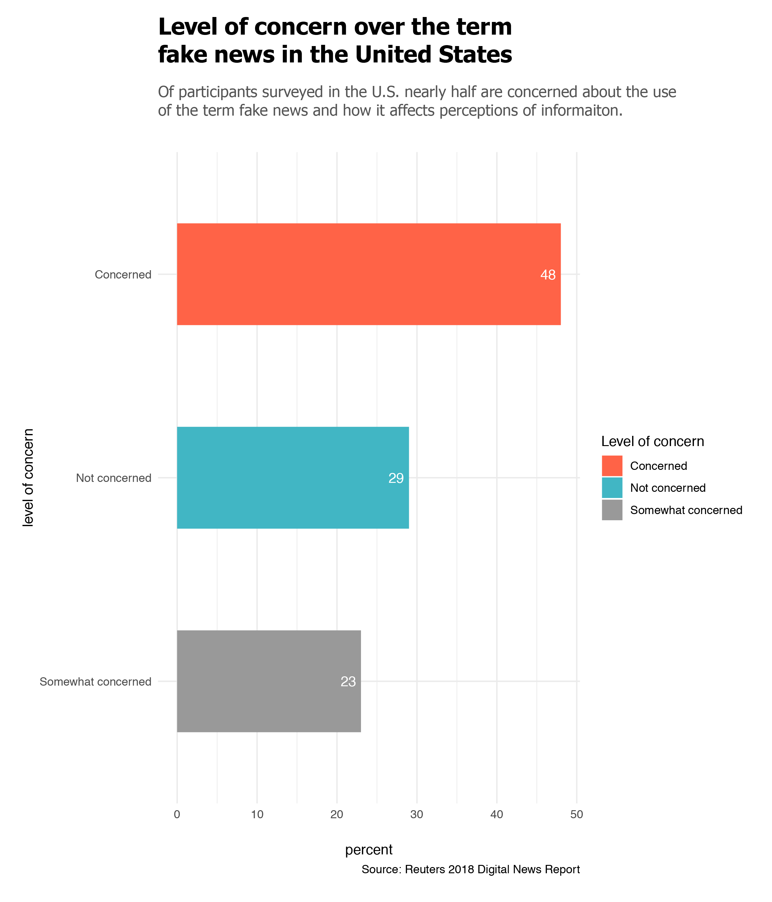

Distrust in media entities starts with misinformation, or poorly communicated information. Misinformation can lead media consumers to make judgements on various forms of media and platforms that can affect media literacy, and from there breed distrust in news accuracy. In a partnership with Oxford University, Reuters Institute’s 2018 Digital News Report studied misinformation using a YouGov survey of over 74,000 online news consumers in 37 countries including the United States.
While advances in trust and quality content have been made Reuters notes that these “changes are fragile, unevenly distributed, and come on top of many years of digital disruption.”
Of all the countries surveyed, the report found that “54% agree or strongly agree that they are concerned about what is real and fake on the internet.” In the United States it’s 64%.

Focusing in on the United States we can clearly see that over half of participants in the Reuters survey have at least some concern over the term fake news and how it can lead to further misinformation or trust issues.

Who’s responsible to correct what’s real or fake, though?
In the United States various age groups show slight differences in agreement of who’s responsible but most are in agreement that media and technology companies should shoulder most of the blame.
Who's responsible for separating what's real and what's fake on the internet?
When comparing sentiments if governemnt, technology or media companies should be held accountable for what's real and fake on the internet age group counts show the majority of all ages agree media and technologies companies are most to blame.
The obvious solution is improving news literacy to build recognition of misinformed versus factual content. The harder solution would be to guarantee trustworthy content from the onset, especially with so many platforms acting as news creators and aggregators. One method of doing so would to adopt an open source, or fully documented, addendum to news reporting. The caveat with that option though, is getting the audience to actually read that additional resource information.
In three of the four literacy survey questions, half of the participants or less answered correctly:
News outlet NOT primarily dependent on advertising for financial support (answer: PBS) – about 84% answered correctly.
Typically responsible for writing a press release (answer: A spokesperson for an organisation) – about 54% answered correctly.
How are individual decisions about what news to show people on Facebook made (answer: By computer analysis of what stories might interest you) – about 40% answered correctly.
Best describes financial performance of newspaper websites and apps (answer: Most of them make a loss) – only 13% answered correctly.
This literacy gap makes it hard for audience to discern whether information is legitimate or not. There are arguments that social media and the internet are to blame for a generational split in literacy and and opinions on what is considered real or fake. Reuters data segmented survey participants into several groups, one of which split traditionalists (primarily print/tv audience), digitialists (those consuming all digital media) and those that consume both. While each group shows similarities digitalists concerns surrounding real versus fake news is highest.
In a 2018 Pew Research Center study looking at news use on social media platforms “concerns about the inaccuracies in news on social media [were] prevalent even among those who say they prefer to get their news there.”
Trust in news found on social media, search
Does searching for news via Google or other search engines or browsing news via social media provide more trustworthy content?
Of those surveyed a count of age groups shows that news found via search seems to lean slightly more trustworthy, while news found via social media leans less trustworthy.
The reliance on social media as a news source has also led to users following certain brands more than others based on what populates their social feeds, therefore believing those brands to be the most trustworthy.
Trust in media brands
On a scale from 1-10 survey participants rated their overall trust in provided media brands.
While the above shows opinions of Fox News are somewhat evenly split, recent research by Media Matters published evidence of four straight months of daily misinformation spread by the network in 2019. Adding further evidence to a literacy gap in how to discern misinformation.
Looking back into open source, we can see a pattern in how some of these brands apply transparency or openness policies:
Buzzfeed News: Under the corrections and updates policy: “Distributed platforms will not always offer these tools for corrections, but we should strive for clarity and transparency in the spirit of these rules…”
New York Times: In their Ethical Journalism handbook: “The goal of The New York Times is to cover the news as impartially as possible — ‘without fear or favor,’ in the words of Adolph Ochs, our patriarch — and to treat readers, news sources, advertisers and others fairly and openly, and to be seen to be doing so.”
Washington Post: In reference to sourcing and attribution: “We want to make our reporting as transparent to the readers as possible so they may know how and where we got our information. Transparency is honest and fair, two values we cherish.”
Huffington Post: In an overarching FAQ for the “HuffPost Community”: “HuffPost promotes a receptive, transparent and civil atmosphere for comments and users.”
NPR: The company's guiding principles state: Our journalists conduct their work with honesty and respect, and they strive to be both independent and impartial in their efforts. Our methods are transparent and we will be accountable for all we do.
Of the broadcast brands surveyed, almost none of them list a code of ethics or publish standards information on their website. CNN’s parent company Warner Media has a short note on journalistic integrity stating: “At CNN, integrity and accuracy are of the utmost importance to the brand, and systems are in place to maintain them.” However this link is not easily accessible on CNN’s website, therefore would be hard to connect to the site’s overall values.
Open source follows a structural path of putting an idea out there and letting it be consumed, tested and adjusted by others without discrimination as to who is involved. In The Field Guide to Open Source in the Newsroom, originally published by OpenNews in 2016, nearly 30 newsroom developers concluded that the goal of open source lies in the sharing of knowledge for the public good. “When we share tools that solve common problems, we work faster and spend more time covering the news. Releasing projects to the public puts more eyes on our code, and makes it better.”
The same solution could be said to improve misinformation. Release a story with full documentation on how it was sourced, the process of reporting, and explanation of why key concepts are important. Some would argue that journalists already do this in the process of objective reporting. However, the “how” of how a journalist found the sources and came to conclusions can still be fuzzy.
Analysis and data:
Data tables of survey results were requested from the Reuters Institue.
Questions and analyzed data for general trust and misinformation graphics: Done in R
Steps for small multiples of trust across surveyed countries: Done in R
Grouped bar charts of likert scales: Done in R(Adjustments of bar and ledgend order made in Adobe Illustrator)